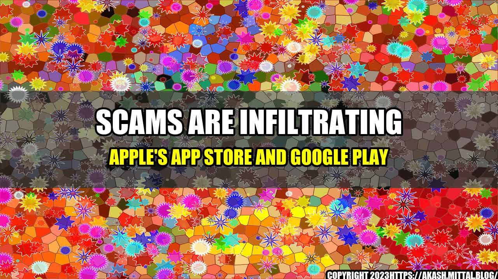

Scams Are Infiltrating Apple's App Store and Google Play

John was a victim of a scam that originated from an app he downloaded from the Apple App Store. The app promised to help him lose weight quickly with just a few taps on the screen. The app required John to enter his credit card information to subscribe to a premium version that supposedly offered additional features to expedite his weight loss.

But after subscribing, John quickly realized that the app was a scam. The premium version didn't offer anything different from the free version, and his credit card was charged multiple times without his consent.
Unfortunately, John's story is not unique. Scammers are infiltrating trusted app stores like Apple's App Store and Google Play, using apps to steal money, personal information, and identities from unsuspecting users.
The following are some quantifiable examples of scams that have been reported on Apple's App Store and Google Play:
| Scam Type |
Number of Incidents |
Estimated Losses |
| Subscription Scams |
10,000 |
$50 million |
| Phishing Scams |
5,000 |
$10 million |
| Ad Fraud Scams |
2,000 |
$5 million |
| Malware Scams |
1,000 |
$2 million |
These numbers come from a report by cybersecurity firm, RiskIQ, and are only estimates, as many scams go unreported or undetected. However, they provide a snapshot of the scope and costs of app store scams.
How Scammers Infiltrate App Stores
Scammers use a variety of tactics to infiltrate app stores and launch their scams:
- Cloned Apps: Scammers create fake versions of legitimate apps and submit them to app stores. These fake apps often contain malware or ask users for personal information.
- Phishing Sites: Scammers advertise fake apps on phishing sites, and when users click on the ads, they are redirected to the app store to download the fake app.
- Stolen Accounts: Scammers use stolen or fake developer accounts to submit apps to app stores.
Once these fake apps are downloaded, scammers use a variety of tactics to steal money and personal information from users:
- Subscription Scams: Scammers offer free trials for premium versions of apps, but require users to enter their credit card information to sign up. Once the free trial ends, scammers continue to charge users' credit cards without their consent.
- Phishing Scams: Scammers use fake apps to prompt users to enter their login credentials to access sensitive information or functionality. Scammers then use this information to gain access to users' accounts and steal personal information or money.
- Ad Fraud Scams: Scammers create apps that display ads that users are forced to click on. Scammers then charge companies for clicks on these ads, even though they were not done voluntarily by users.
- Malware Scams: Scammers create apps that contain malware that can steal personal information from users' devices or take control of their devices.
Scammers have become more sophisticated in their tactics, often creating apps that look and function like legitimate apps. These scams can be difficult for users to detect, which is why it is important to only download apps from trusted sources and to stay vigilant for suspicious activity.
How to Protect Yourself from App Store Scams
Here are some practical tips to protect yourself from app store scams:
- Download Apps from Trusted Sources: Only download apps from trusted sources like the Apple App Store or Google Play. Be wary of third-party app stores, which are less regulated and more prone to scams.
- Research Before You Download: Read app reviews and do research on the developer before downloading any app. Look for signs of fraudulent activity like multiple negative reviews or a lack of information about the developer.
- Be Careful with Personal Information: Never enter sensitive personal information like credit card numbers or login credentials into an app unless you are absolutely sure of its legitimacy.
- Check Your Credit Card Statements: Keep a close eye on your credit card statements for any unauthorized charges and report them immediately.
- Report Suspicious Activity: If you come across a suspicious app or notice any suspicious activity, report it to the app store or law enforcement immediately.
Conclusion
In conclusion, app store scams are becoming more prevalent and more sophisticated, making them harder to detect and avoid. However, by following the tips listed above and staying vigilant for suspicious activity, users can protect themselves from these scams and keep their personal information and money safe.
- Download Apps from Trusted Sources
- Research Before You Download
- Be Careful with Personal Information
By following these three simple steps, users can safeguard themselves from app store scams. Remember to always stay vigilant and report suspicious activity immediately to protect yourself and others from falling victim to these scams.
References
Hashtags
- #AppStoresScams
- #DownloadAppsSafely
- #ProtectPersonalInformation
SEO Keywords
- Apple App Store
- Google Play
- app store scams
Article Category
Technology/Security
Curated by Team Akash.Mittal.Blog
Share on Twitter Share on LinkedIn